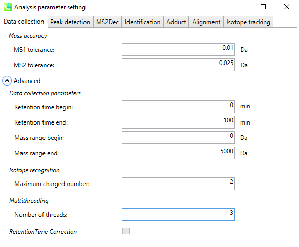
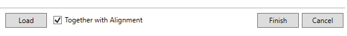
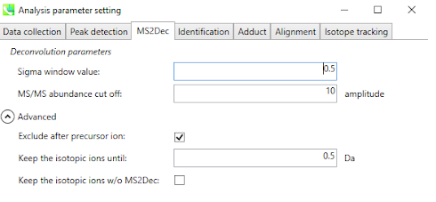
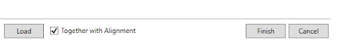
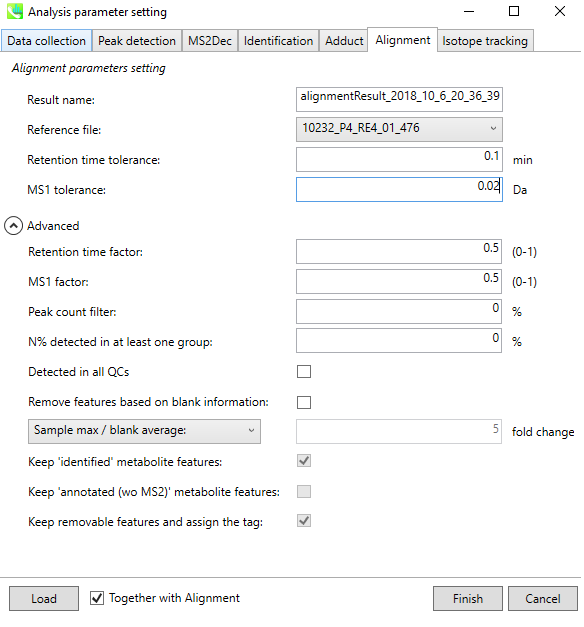
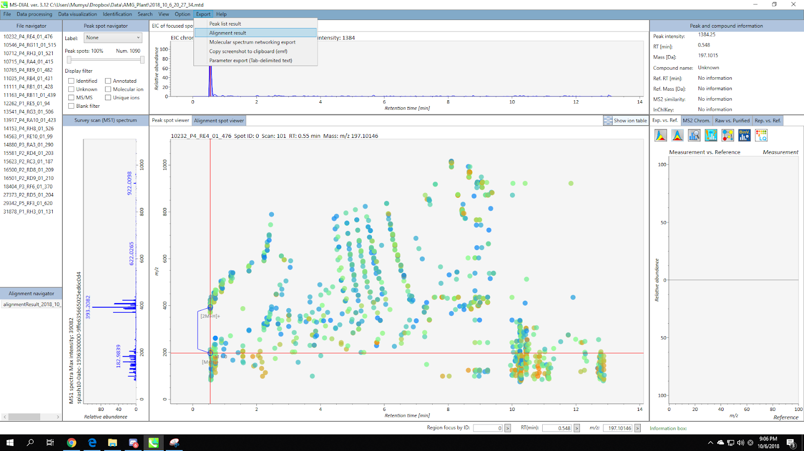
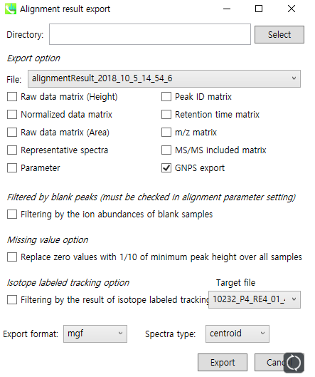

FBMN with MS-DIAL
1. Introduction
The main documentation for Feature-Based Molecular Networking (FBMN) can be accessed here. See our preprint on bioaRxiv.
Below we are describing how to use MS-DIAL with the FBMN workflow on GNPS.
2. Mass spectrometry processing with MS-DIAL
Download the latest version of MS-DIAL software at http://prime.psc.riken.jp/Metabolomics_Software/MS-DIAL.
Citations and development
This work builds on the efforts of our many colleagues, please cite their work:
Nothias, L.F. et al Feature-based Molecular Networking in the GNPS Analysis Environment bioRxiv 812404 (2019).
Wang, M. et al. Sharing and community curation of mass spectrometry data with Global Natural Products Social Molecular Networking. Nat. Biotechnol. 34, 828–837 (2016).
Tsugawa, H., Cajka, T., Kind, T., Ma, Y., Higgins, B., Ikeda, K., Kanazawa, M., VanderGheynst, J., Fiehn, O. & Arita, M. MS-DIAL: data-independent MS/MS deconvolution for comprehensive metabolome analysis. Nature Methods 12, 523-526 (2015).
Lai, Z., Tsugawa, H., Wohlgemuth, G., Mehta, S., Mueller, M., Zheng, Y., Ogiwara, A., Meissen, J., Showalter, M., Takeuchi, K., Kind, T., Beal, P., Arita, M. & Fiehn, O. Identifying metabolites by integrating metabolome databases with mass spectrometry cheminformatics. Nature Methods 15, 53-56 (2018).
Mass Spectrometry Data Processing with MS-DIAL
In MS-DIAL, a sequence of steps is performed to process the mass spectrometry data. Here we will present key steps required to process LC-MS/MS data acquired in non-targeted mode (data dependent acquisition). MS- DIAL can process LC-MS/MS data performed in non-targeted mode, but also in MSE and now with Ion Mobility Spectrometry. For convenience we also provide a batch file (XML format) that can be imported directly in MS-DIAL.
IMPORTANT: MS-DIAL parameters will vary depending on the mass spectrometer, the acquisition parameters, and the samples studied. In this page we present a basic guideline for using MS-DIAL with the FBMN on GNPS.
Documentation
Please consult these resources for more details on MS-DIAL processing:
- See the MS-DIAL documentation on LC-MS/MS data processing
- See the MS-DIAL documentation for MSE data processing
- See the MS-DIAL documentation on Ion Mobility Spectrometry data processing
Video Presentation and Tutorials
- The presentation/tutorial about MS-DIAL from the Leibniz Institute of Plant Biochemistry.
- This video from the WCMC about MS-DIAL
- The video tutorial about MS-DIAL processing for FBMN on GNPS.
Convert your LC-MS/MS Data to Open Format
MS-DIAL accepts different input formats. Note that we recommend first to convert your files to mzML format before doing MS-DIAL processing. See the documentation here.
Processing Steps for non-targeted LC-MS/MS
Below is a walk-through of all the steps
1. Make a New Project
Go to Menu: File / New Project

Select appropriate parameters (ionization type / method type / data type / ion mode / target omics) for your dataset. Click “Next”.
2. Import Files
Click “browse” and open the dropdown menu for file types, and select “mzML file(*.mzml)”. The other available options are .abf or .cdf files.
[Note] Data files should be placed at the same folder with the project file.
Select files and click “Open”. You will see the list of selected files. Click “Next”.

3. Set Parameters - Data Collection
Set the MS1/MS2 tolerance and data collection parameters.
If you are dealing with a large dataset, you can reduce the running time by setting multithreading option in the “Advanced” menu.
 
4. Set Parameters - Peak Detection
Set the MS1 peak detection parameters. You should set a peak height threshold that is adapted to the mass spectrometer.
As a rule of thumb, the value should at least correspond to the minimum value set for the triggering of the MS2 scan event.
If you want to remove some specific ions (e.g. known contaminants), you can make an exclusion list here.

5. Set Parameters - MS2Deconvolution
You should set an appropriate MS/MS abundance cutoff. Make sure to set an intensity threshold representative of the noise level in MS2 spectra.
This is typically lower than for MS1. If you have any doubt, set it to 0.


6. Set Parameters - Alignment
Set appropriate Retention time / MS1 tolerance for alignment.
If you have any quality control (QC) sample data, it is a nice candidate to be the reference file.
Click “Finish”, then MS-DIAL will perform all the feature detection and alignment process.

Processing Steps for MSE data (Experimental)
- See the MS-DIAL documentation for MSE data processing, and export the files as indicated below. If you encounter any issue, please contact the GNPS team on the forum or GitHub.
Ion Mobility Spectrometry data (Experimental)
- See the MS-DIAL documentation on Ion Mobility Spectrometry data processing, and export the files as indicated below. If you encounter any issue, please contact the GNPS team on the forum or GitHub.
Export the files for GNPS FBMN
To run FBMN after MS-DIAL processing, two files have to be exported:
-
The feature quantification table (TXT file) containing compound intensity and annotation.
-
The MS/MS spectral summary (MGF file) containing the list of representative MS/MS spectra (the most intense MS/MS spectrum).
Go to Menu: Export / Alignment result

Make sur the “GNPS export” box is checked, and set the spectra type to “centroid”.
Set the directory and file name, then click “Export”. As a result, you will acquire a MS/MS spectral summary and the feature quantification table.

[Note] The GNPS export option of MS-DIAL will create a feature table based on MS1 peak height. If you want a feature table based on peak area, check the “Raw data matrix (Area)”.
See example of files generated by MS-DIAL and used for the FBMN by the export workflow here.
3. Running the FBMN with MS-DIAL
After the processing with MS-DIAL, the output files can be used to run the Feature-Based Molecular Networking workflow on GNPS either using the [Superquick FBMN start page] (http://dorresteinappshub.ucsd.edu:5050/featurebasednetworking) or the standard interface of the FBMN workflow (you need to be logged in GNPS first).
See the main documentation for more details about the FBMN workflow on GNPS.
Basically, you will need to upload the files produced by MS-DIAL:
- The feature quantification table (.TXT file)
- The MS/MS spetral summary file (.MGF file)
- (Optional) The metadata table - requirements are described here.
https://ccms-ucsd.github.io/GNPSDocumentation/metadata/
IMPORTANT WHEN USING A METADATA TABLE WITH MS-DIAL: "filename" in the metadata files for FBMN with MS-DIAL should not contain file extensions (ex: "sample1.mzML" must be "sample1").
Here is an example MS-DIAL networking job from a subset of the American Gut Project.
Tutorials
See our MS-DIAL tutorial on using Feature Based Molecular Networking for the American Gut Project sample.
Page contributors
Kyo Bin Kang (Sookmyung Women's University), Heejung Yang (Kangwon National University) Louis Felix Nothias (UCSD), Ivan Protsyuk (EMBL, Heidelberg, Germany).
Join the GNPS Community !
- For feature request, or to report bugs, please open an "Issue" on the CCMS-UCSD/GNPS_Workflows GitHub repository.
- To contribute to the GNPS documentation, please use GitHub by forking the CCMS-UCSD/GNPSDocumentation repository, and make a "Pull Request" with the changes.